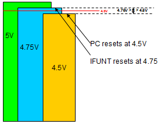

Service History
Subject: NS-7000 "Tester Calibrating" HandlerID issue
Handler Model:
Controller:
Date: 8 Mar 2012
Symptom
1. NS7000 Handler ID
UTAC Action Items:
Replace power supply and monitor for 2 weeks
Double confirm with tester software for any irregularities
Epson Action Items:
Provide detailed technical reason for advising on power supply replacement
Provide tool to capture data to help find root cause (if tool is available)
Action
ESP software engineer would like to share with you our explanation on why we have advised power supply replacement to resolve the "Tester Calibrating" HandlerID issue.
I have prepared and attached a voltage degradation diagram to better illustrate the scenario.
Kindly continue to monitor the handler with new PSU and feel free to contact us if you require further explanation.

Explanation for PSU supply degradation
Power supply unit (PSU) is made to last for approx. 6 years. Some internal parts of the PSU are however guaranteed only to operate within 3.5 years.
Due to degradation of capacitor, supply on the 5V output may be affected.
Explanation for Index Arm moves up and down repeatedly:
* When voltage supply on 5V supply output degrades to 4.75V, the IFUNT board will be reset.
* When voltage supply on 5V supply output degrades to 4.5V, the handler PC will be reset.
We suppose that for the "Tester Calibrating" issue to happen, the voltage supply is between 4.75V and 4.5V thresholds, let's assume 4.6V.
During this case, the IFUNT is reset but PC is still operational. Since IFUNT is reset when tester is testing an IC, PC software will initiate retest causing the index arm to go up and down. Since IFUNT was unintentionally reset, it is no longer synchronized with PC operation.
Explanation for EpsonTypeU and its relation to supply Issue
EpsonTypeU is an extended command set created to support "HANDLERID?" query. Expanded set utilizes extra I/O ports.
It is possible that for AdvanType1 usage, voltage was slightly above 4.75V. By adding EpsonTypeU set, voltage fell below 4.75 threshold, but above 4.5V limit.
Software tool for monitoring
Since the issue is related to supply voltage, we cannot issue a software tool to monitor. We can, however, check the IFUNT LED to determine if an IFUNT reset has occurred.